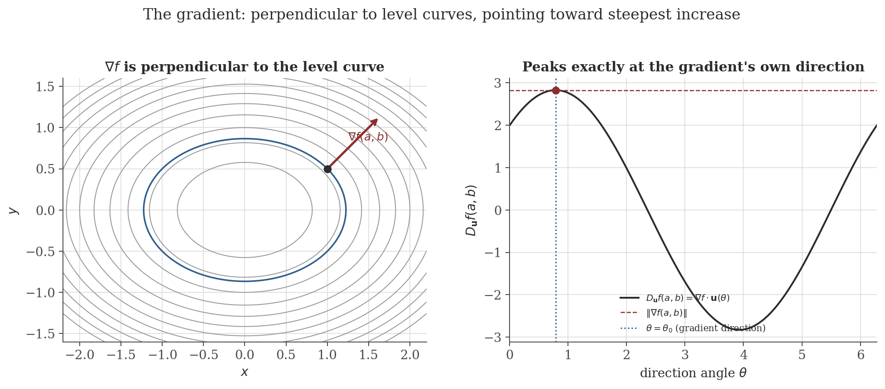
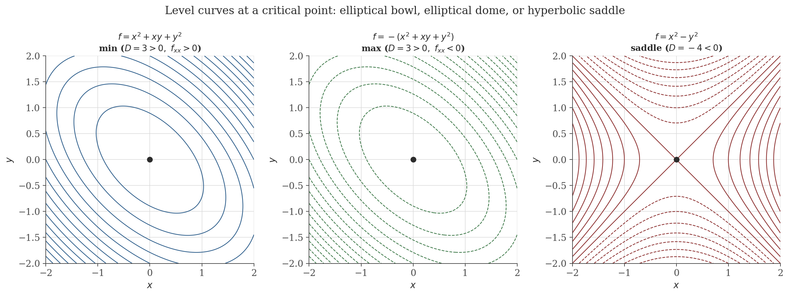

Multivariable Calculus
Disclaimer: These are my personal notes compiled for my own reference and learning. They may contain errors, incomplete information, or personal interpretations. While I strive for accuracy, these notes are not peer-reviewed and should not be considered authoritative sources. Please consult official textbooks, research papers, or other reliable sources for academic or professional purposes.
Contents
- Partial derivatives and the gradient
- Differentiability: why partial derivatives are not enough
- The multivariable chain rule
- Directional derivatives and steepest ascent
- Clairaut's theorem: equality of mixed partials
- Taylor's theorem in two variables and the Hessian
- Critical points and the second-derivative test
- The Implicit Function Theorem
- Lagrange multipliers
- Multiple integrals and vector calculus, stated without proof
- Computation
- Common pitfalls
- Connections
- References
1. Partial derivatives and the gradient
The partial derivative of $f(x,y)$ with respect to $x$ at $(a,b)$ is $\displaystyle f_x(a,b)=\lim_{h\to0}\frac{f(a+h,b)-f(a,b)}{h}$ — the ordinary derivative of the single-variable slice $x\mapsto f(x,b)$ at $x=a$. $f_y(a,b)$ is defined symmetrically. The gradient is $\nabla f(a,b)=\big(f_x(a,b),f_y(a,b)\big)$.
Nothing new is needed to compute a partial derivative — it is exactly the single-variable machinery of the differentiation note, applied to a function of one variable at a time while the other is frozen. What genuinely is new, and is the subject of Section 2, is what it means for $f$ to be differentiable as a function of both variables together.
2. Differentiability: why partial derivatives are not enough
$f$ is (totally) differentiable at $(a,b)$ if $\displaystyle\lim_{(h,k)\to(0,0)}\frac{f(a+h,b+k)-f(a,b)-f_x(a,b)h-f_y(a,b)k}{\sqrt{h^2+k^2}}=0$ — the plane $z=f(a,b)+f_x(a,b)h+f_y(a,b)k$ approximates $f$ with an error that is $o$ of the distance moved, in every direction simultaneously.
$f(x,y)=\dfrac{xy}{x^2+y^2}$ for $(x,y)\neq(0,0)$, $f(0,0)=0$. Along each axis $f\equiv0$, so $f_x(0,0)=f_y(0,0)=0$ exist. But along $y=x$: $f(x,x)=\frac{x^2}{2x^2}=\frac12$ for every $x\neq0$, while $f(0,0)=0$ — so $f$ is not continuous at the origin, let alone differentiable there. Existence of both partial derivatives says nothing about behavior in directions other than the two axes; total differentiability, unlike the one-variable case (differentiation note, Section 2), is not automatic from one-directional information.
If $f_x,f_y$ exist and are continuous near $(a,b)$ (i.e. $f\in C^1$), then $f$ is differentiable at $(a,b)$.
3. The multivariable chain rule
If $f$ is differentiable at $(a,b)=(x(t_0),y(t_0))$ and $x,y$ are differentiable at $t_0$, then $\dfrac{d}{dt}f(x(t),y(t))\Big|_{t_0}=f_x(a,b)x'(t_0)+f_y(a,b)y'(t_0)=\nabla f(a,b)\cdot\big(x'(t_0),y'(t_0)\big)$.
Taking $f=F$, $x(t)=t$, $y(t)=g(t)$ for an implicitly defined $y=g(x)$ solving $F(x,y)=0$ recovers exactly the informal computation of implicit differentiation in the differentiation note (Section 10): $F_x+F_y\,g'(x)=0$, so $g'(x)=-F_x/F_y$ wherever $F_y\neq0$ — now derived from this section's rigorous chain rule rather than asserted. Section 8 below supplies the missing piece that note deferred: why a differentiable $g$ solving $F(x,y)=0$ exists near a point with $F_y\neq0$ in the first place.
4. Directional derivatives and steepest ascent
For a unit vector $\mathbf u=(u_1,u_2)$, the directional derivative is $D_{\mathbf u}f(a,b)=\lim_{t\to0}\frac{f(a+tu_1,b+tu_2)-f(a,b)}{t}$. If $f$ is differentiable at $(a,b)$, $D_{\mathbf u}f(a,b)=\nabla f(a,b)\cdot\mathbf u$ — an immediate corollary of the chain rule (Section 3) with $x(t)=a+tu_1$, $y(t)=b+tu_2$.
By the Cauchy–Schwarz inequality, $D_{\mathbf u}f(a,b)=\nabla f(a,b)\cdot\mathbf u\leq\|\nabla f(a,b)\|\,\|\mathbf u\|=\|\nabla f(a,b)\|$, with equality iff $\mathbf u$ points in the same direction as $\nabla f(a,b)$ (the Cauchy–Schwarz equality case). So among all directions, the gradient's own direction is exactly the one maximizing the instantaneous rate of increase, and that maximum rate is $\|\nabla f(a,b)\|$ itself — the fact that makes $-\nabla f$ the universal choice of descent direction in gradient-based optimization.

5. Clairaut's theorem: equality of mixed partials
If $f_{xy}$ and $f_{yx}$ exist and are continuous near $(a,b)$, then $f_{xy}(a,b)=f_{yx}(a,b)$.
The proof is two applications of the one-variable MVT in each order, then a squeeze — the same double-MVT pattern used again in Section 6's proof of Taylor's theorem below, and structurally the same "compute two ways, equate, take a limit" strategy as the Cauchy Mean Value Theorem's role in L'Hôpital's rule (differentiation note, Section 8).
6. Taylor's theorem in two variables and the Hessian
The Hessian is $H(x,y)=\begin{pmatrix}f_{xx}&f_{xy}\\f_{yx}&f_{yy}\end{pmatrix}$, symmetric by Clairaut's theorem (Section 5) whenever $f\in C^2$.
If $f\in C^2$ near $(a,b)$, then $f(a+h,b+k)=f(a,b)+\nabla f(a,b)\cdot(h,k)+\dfrac12(h,k)\,H(a+\xi h,b+\xi k)\,(h,k)^T$ for some $\xi\in(0,1)$.
The proof technique — restrict to the line segment joining the two points and invoke the one-variable theorem — is completely general and reduces essentially every multivariable differential fact used in this note back to single-variable calculus applied along a cleverly chosen path; Section 9's proof of the Lagrange multiplier condition uses exactly the same reduction, restricting to a constraint curve instead of a line.
7. Critical points and the second-derivative test
If $f$ has a local extremum at an interior point $(a,b)$ where $f$ is differentiable, then $\nabla f(a,b)=\mathbf 0$.
Points with $\nabla f=\mathbf0$ (or where $f$ fails to be differentiable) are critical points; as in the one-variable case, being critical is necessary but not sufficient for an extremum — classifying which is the job of the following test.
7.1 The test
Let $(a,b)$ be a critical point with $f\in C^2$ near it, and $D=f_{xx}(a,b)f_{yy}(a,b)-f_{xy}(a,b)^2$ (the determinant of the Hessian at $(a,b)$). Then: $D>0,\,f_{xx}(a,b)>0\Rightarrow$ local min; $D>0,\,f_{xx}(a,b)<0\Rightarrow$ local max; $D<0\Rightarrow$ saddle point; $D=0\Rightarrow$ inconclusive.
7.2 Classification via Hessian eigenvalues
$H(a,b)$ is symmetric (Clairaut, Section 5), so by the spectral theorem (eigenvalues note, Section 6) it has two real eigenvalues $\lambda_1,\lambda_2$ with $\lambda_1\lambda_2=\det H=D$ and $\lambda_1+\lambda_2=\operatorname{tr}H=f_{xx}+f_{yy}$. $D>0$ means $\lambda_1,\lambda_2$ share a sign; $f_{xx}>0$ in that case forces both positive (a positive-definite Hessian — the quadratic form $Q$ from Section 7.1 is exactly the Rayleigh-quotient-flavored object of that note's Section 8), giving a local min, and both negative gives a local max. $D<0$ means $\lambda_1,\lambda_2$ have opposite signs — the Hessian is indefinite, curving up in one eigendirection and down in the other, precisely the saddle geometry in Figure 2. The sign conditions on $D$ and $f_{xx}$ in Section 7.1 are, in this light, just a determinant-and-trace-only way of reading off the eigenvalues' signs without computing them.

8. The Implicit Function Theorem
Let $F$ be $C^1$ near $(a,b)$ with $F(a,b)=0$ and $F_y(a,b)\neq0$. Then there is an interval $I$ around $a$ and a unique differentiable $g:I\to\mathbb R$ with $g(a)=b$ and $F(x,g(x))=0$ for all $x\in I$, satisfying $g'(x)=-\dfrac{F_x(x,g(x))}{F_y(x,g(x))}$.
$F_y(a,b)\neq0$ is not a technicality: it is exactly the condition ruling out a vertical tangent to the curve $F=0$ at $(a,b)$ (where no function $y=g(x)$ could locally describe the curve at all, e.g. the circle $x^2+y^2=1$ at $(1,0)$, where $F_y=2y=0$ — precisely where the earlier informal formula $y'=-F_x/F_y$ from Section 3 blows up).
9. Lagrange multipliers
Let $f,g\in C^1$ near $(a,b)$ with $\nabla g(a,b)\neq\mathbf0$. If $(a,b)$ is a local extremum of $f$ restricted to the constraint curve $g(x,y)=c$, then $\nabla f(a,b)=\lambda\nabla g(a,b)$ for some scalar $\lambda$.
Geometrically: the constraint curve's tangent direction at $(a,b)$ is $(1,h'(a))$, and $g_x(a,b)+g_y(a,b)h'(a)=0$ says this tangent is orthogonal to $\nabla g(a,b)$ (as it must be — $g$ is constant along its own level curve, Section 4). The proof shows $f$'s directional derivative along that same tangent must vanish at an extremum, forcing $\nabla f(a,b)$ orthogonal to the tangent too — and two vectors both orthogonal to the same direction in the plane are parallel to each other.
10. Multiple integrals and vector calculus, stated without proof
The remaining classical machinery of multivariable calculus is integral rather than differential, and proving it rigorously (measure-theoretic Fubini, the change-of-variables formula via a Riemann-sum argument in $\mathbb R^n$, Green's theorem via a decomposition into rectangles) is a substantially larger undertaking than this note's scope. The statements are recorded here for reference, each a direct higher-dimensional generalization of a single-variable fact already proved in the integration note.
$\displaystyle\iint_Rf(x,y)\,dA=\int_a^b\int_{g_1(x)}^{g_2(x)}f(x,y)\,dy\,dx$ for suitable regions $R$ — a double integral is computed by integrating one variable at a time, in either order, when $f$ is continuous.
For $T:(u,v)\mapsto(x,y)$ a $C^1$ bijection with Jacobian $J=\det\begin{pmatrix}\partial x/\partial u&\partial x/\partial v\\\partial y/\partial u&\partial y/\partial v\end{pmatrix}$: $\displaystyle\iint_Rf(x,y)\,dA=\iint_Sf(x(u,v),y(u,v))\,|J|\,du\,dv$ — the direct generalization of the one-variable substitution rule (integration note, Section 6), with $|J|$ playing the role $|g'(x)|$ played there.
For $\mathbf F=P\mathbf i+Q\mathbf j$ and a simple closed curve $C$ bounding a region $D$: $\displaystyle\oint_C\mathbf F\cdot d\mathbf r=\iint_D\left(\frac{\partial Q}{\partial x}-\frac{\partial P}{\partial y}\right)dA$ — a boundary integral equals an integral of a derivative over the interior, the two-dimensional analogue of the FTC (integration note, Section 5), where "boundary" of an interval is just its two endpoints.
(See Marsden & Tromba, 2012, Ch. 6 & 8, for full statements and proofs, including the divergence and Stokes' theorems in three dimensions of which Green's theorem is the planar special case.)
11. Computation
The figures above are generated by multivariable-calculus/generate_figures.py. The snippet below verifies Clairaut's theorem numerically (finite-difference mixed partials computed in both orders) and checks the second-derivative test's predictions against a direct perturbation scan around each critical point.
import numpy as np
def f(x, y):
return np.sin(x) * y**2 + x**2 * np.cos(y)
h = 1e-4
def fxy(x, y):
return (f(x+h,y+h) - f(x+h,y-h) - f(x-h,y+h) + f(x-h,y-h)) / (4*h*h)
def fyx(x, y):
return (f(x+h,y+h) - f(x-h,y+h) - f(x+h,y-h) + f(x-h,y-h)) / (4*h*h)
print(f"f_xy(0.7,-0.3) = {fxy(0.7,-0.3):.8f}")
print(f"f_yx(0.7,-0.3) = {fyx(0.7,-0.3):.8f}")
cases = {
"x^2+xy+y^2": (lambda x,y: x**2+x*y+y**2, 2, 2, 1),
"-(x^2+xy+y^2)": (lambda x,y: -(x**2+x*y+y**2), -2, -2, -1),
"x^2-y^2": (lambda x,y: x**2-y**2, 2, -2, 0),
}
for name, (fn, fxx, fyy, fxy_) in cases.items():
D = fxx*fyy - fxy_**2
thetas = np.linspace(0, 2*np.pi, 200)
vals = np.array([fn(0.05*np.cos(t), 0.05*np.sin(t)) - fn(0,0) for t in thetas])
actual = "local min" if np.all(vals > 0) else "local max" if np.all(vals < 0) else "saddle"
print(f"f={name:16s} D={D:5.1f} f_xx={fxx:3d} scan-confirmed={actual}")
Actual output:
f_xy(0.7,-0.3) = -0.04517702
f_yx(0.7,-0.3) = -0.04517702
f=x^2+xy+y^2 D= 3.0 f_xx= 2 scan-confirmed=local min
f=-(x^2+xy+y^2) D= 3.0 f_xx= -2 scan-confirmed=local max
f=x^2-y^2 D= -4.0 f_xx= 2 scan-confirmed=saddleThe two finite-difference mixed partials agree to 8 decimal places, confirming Clairaut's theorem numerically for a function with no special symmetry; and a fine scan of $f$ around each critical point (sampling $200$ directions on a small circle) confirms every classification the second-derivative test predicts, exactly as the contour figure shows geometrically.
12. Common pitfalls
Demonstrated in Section 2: $f(x,y)=xy/(x^2+y^2)$ (with $f(0,0)=0$) has both partial derivatives at the origin, yet is not even continuous there. Checking $f_x$ and $f_y$ exist is not a substitute for checking (or invoking the $C^1$ sufficient condition for) total differentiability.
Both $f_1(x,y)=x^4+y^4$ and $f_2(x,y)=x^4-y^4$ have $\nabla f=\mathbf 0$ and every second partial equal to $0$ at the origin, so $D=0$ for both. Yet $f_1$ has a genuine local (in fact global) minimum at the origin ($f_1\geq0$ always), while $f_2$ is a saddle ($f_2(x,0)=x^4>0$ but $f_2(0,y)=-y^4<0$ for $x,y\neq0$). The second-derivative test's $D=0$ case is silent precisely because both outcomes are consistent with it — a higher-order (quartic) expansion is needed to distinguish them, not a refinement of the same quadratic test.
The classical counterexample is $f(x,y)=\dfrac{xy(x^2-y^2)}{x^2+y^2}$ for $(x,y)\neq(0,0)$, $f(0,0)=0$: both mixed partials exist everywhere, but $f_{xy}(0,0)=-1\neq1=f_{yx}(0,0)$ (see Apostol, 1974, §12.11, for the computation). Continuity of $f_{xy},f_{yx}$ at the point in question — the hypothesis actually used in Section 5's proof, via the final squeeze step — is not optional bookkeeping.
Solving $\nabla f=\lambda\nabla g$ finds candidates the same way $f'=0$ finds one-variable candidates (differentiation note, Section 6) — necessary, not sufficient. Distinguishing an actual constrained max from a min or saddle-along-the-constraint needs a second-order argument or, often more simply in practice, comparing $f$'s values across all the candidate points directly (legitimate when the constraint set is compact, by the Extreme Value Theorem, continuity note Section 6).
13. Connections
- Differentiation. Nearly every proof here reduces to that note's one-variable machinery along a line or a slice: Fermat's theorem and the Mean Value Theorem power Sections 2, 5, 7, and 8; Taylor's theorem with Lagrange remainder is the engine of Section 6's proof; the chain rule (Section 3) is the direct two-variable generalization of that note's Section 4.
- Continuity and limits. The Intermediate Value Theorem and Extreme Value Theorem are used, respectively, in the Implicit Function Theorem's existence argument (Section 8) and the second-derivative test's closing compactness step (Section 7.1).
- Eigenvalues. Section 7.2 classifies a critical point by the sign of $D=\det H$, exactly the sign of the product of the Hessian's (necessarily real, by the spectral theorem) eigenvalues — the Rayleigh-quotient machinery of that note's Section 8 is what makes "positive-definite Hessian" a precise, checkable condition rather than a slogan.
- Integration. Section 10's Fubini and change-of-variables theorems are direct higher-dimensional generalizations of that note's iterated-computation and substitution results; Green's theorem is the planar Fundamental Theorem of Calculus, a boundary integral standing in for evaluating an antiderivative at two endpoints.
- Optimization (machine learning). Section 4's steepest-ascent property of the gradient is the entire justification for gradient descent moving along $-\nabla f$; Section 7's second-derivative test, generalized to $n$ dimensions via the same Hessian-eigenvalue logic, underlies convexity conditions used to guarantee such methods converge to a genuine minimum rather than a saddle.
14. References
- Rudin, W. (1976). Principles of Mathematical Analysis (3rd ed.). McGraw-Hill.
- Apostol, T. M. (1974). Mathematical Analysis (2nd ed.). Addison-Wesley.
- Marsden, J. E., & Tromba, A. J. (2012). Vector Calculus (6th ed.). W. H. Freeman.
- Hubbard, J. H., & Hubbard, B. B. (2015). Vector Calculus, Linear Algebra, and Differential Forms (5th ed.). Matrix Editions.